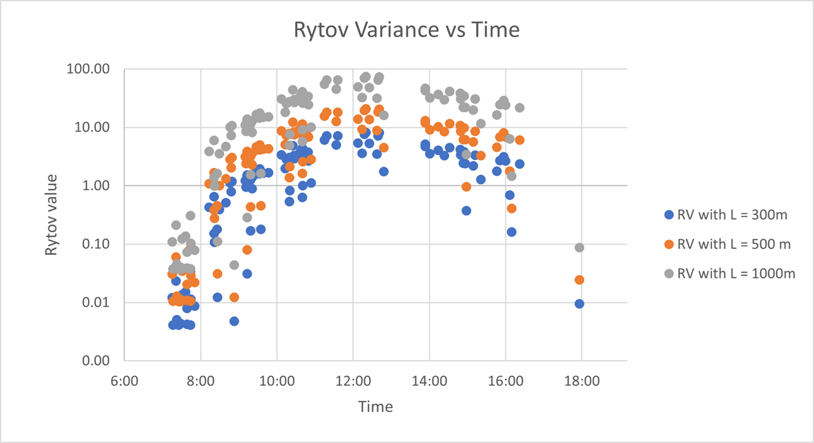

Assessing the Effect of Atmospheric Turbulence on Long-Range Face Recognition Accuracy
Introduction
This study provides an experiment-based result for face detection and identification performance using two algorithms: an open-source algorithm, ArcFace, with a Resnet-50 architecture, and second, a commercial off-the-shelf algorithm (COTS-A). Based on Rytov variance, we see how an image captured using long-range cameras containing atmospheric turbulence affects face recognition as the level of turbulence increases.
Experimental Design
- Conducted experiment-based analysis to assess biometric performance, investigating image detection under various Rytov values amidst atmospheric turbulence.
- Explored the influence of distance on Rytov value and turbulence on biometric degradation, deriving insights for enhanced performance.
- Managed extensive image, video, and metadata datasets, necessitating adept data management and visualization techniques for project coherence and efficiency.
Future Scope
This study used a simulated environment to introduce atmospheric turbulence, future work can involve using images or videos taken from long-range cameras or drones in an uncontrolled environment and comparing both analyses to see how Rytov values affect those images with turbulence. Also, we can see how atmospheric correction methods can be added for each turbulence level to improve detection and recognition. Moreover, future work can involve adding obscured images to see how, if at all, coverings change the match score as the turbulence is increased.
Result
The process
Data Visulaizations